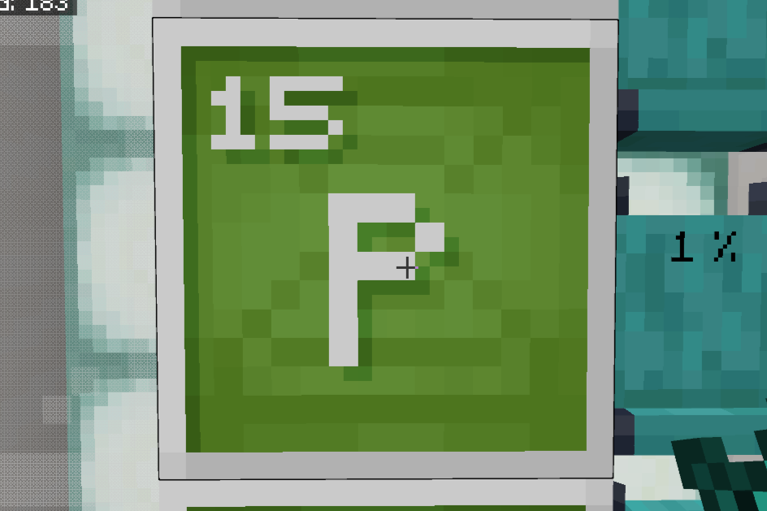
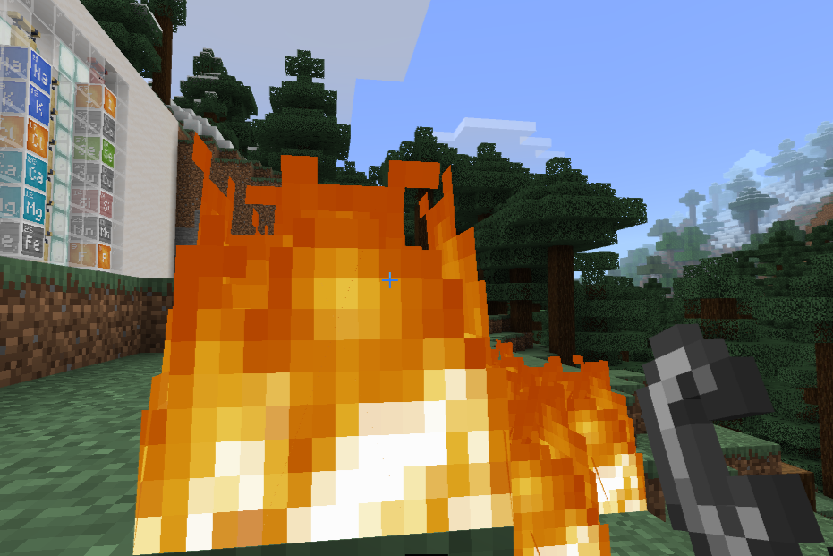
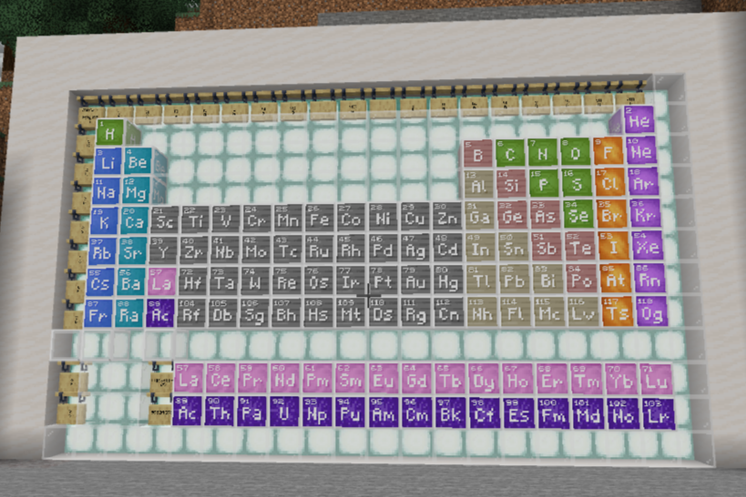
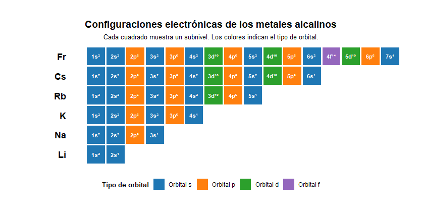
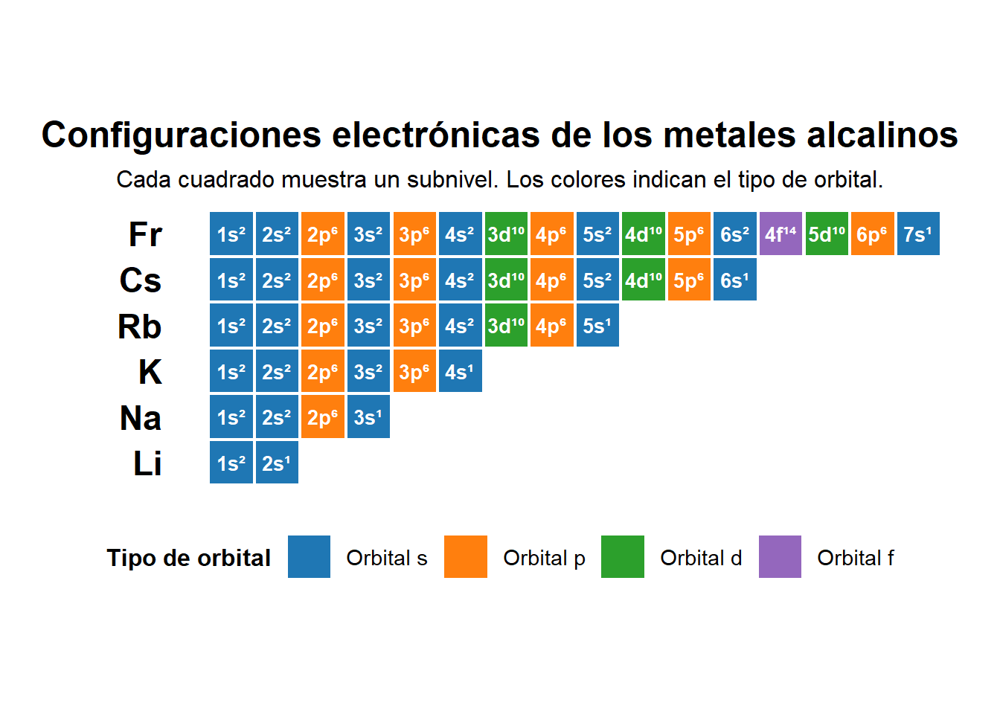
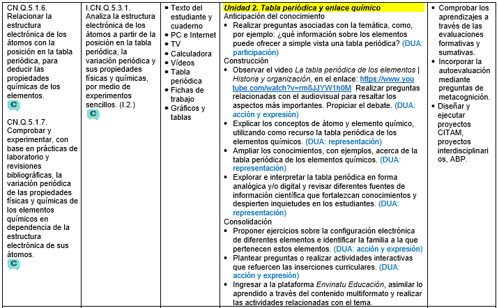

flowchart TD
A[Elementos Químicos] --> B
A --> C
A --> D
subgraph B[Tabla Periódica]
B1[Estructura electrónica<br/>y tabla periódica]
B2[V. periódica de propiedades<br/>físicas y químicas]
end
subgraph C[Enlace Químico]
C1[Propiedades físicas<br/>iónicos/covalentes]
C2[Tipos de enlaces químicos]
C3[Fuerzas intermoleculares]
C4[Símbolos de Lewis<br/>Electronegatividad]
end
subgraph D[Iones]
D1[Ionización]
D2[Iones monoatómicos]
D3[Soluciones iónicas]
end
style A fill:#1e88e5,color:#ffffff,stroke:#0d47a1,stroke-width:3px
style B fill:#ffffff,color:#1565c0,stroke:#1565c0,stroke-width:2px
style C fill:#ffffff,color:#c62828,stroke:#c62828,stroke-width:2px
style D fill:#ffffff,color:#6a1b9a,stroke:#6a1b9a,stroke-width:2px
Los átomos y la tabla periódica
Tabla periódica y enlace químico

NotaCompletar esta clase te permitirá:
CN.Q.5.1.6… CN.Q.5.1.7. Comprobar y experimentar, con base en prácticas de laboratorio y revisiones bibliográficas, la variación periódica de las propiedades físicas y químicas de los elementos químicos en dependencia de la estructura electrónica de sus átomos.

En nuestro planeta y en todo el universo, encontramos un sinnúmero de sustancias. Desde la Grecia antigua hasta la época de Dalton se intentó identificar cuáles eran los elementos esenciales que formaban tal diversidad de sustancias.
Ahora sabemos que existen piezas, que al igual que a un lego, pueden unirse y dar como resultado nuevas sustancias, y es bastante complicado que puedan ser descompuestas en algo más simple. Estas sustancias se denominan elementos químicos.
Entre los elementos químicos hay una poderosa tendencia a combinarse entre ellos y formar moléculas que originan nuevas sustancias. La fuerza de atracción que mantiene unidos a los átomos en una molécula es llamada enlace químico.

Los elementos químicos
La tabla periódica de los elementos químicos es una de las herramientas más perfectas que ha inventado el ser humano, debido a que contiene, en un pequeño esquema, la síntesis del conocimiento que hemos acumulado durante milenios sobre las características y comportamiento de las sustancias elementales que componen la materia, denominadas elementos químicos.
{kind=link}
A la humanidad le tomó muchos siglos de experimentos y análisis de materiales para conocer cuáles eran los reales elementos básicos que formaban las sustancias. Para la época de los griegos, ya se habían aislado ciertos elementos como el hierro, el cobre, la plata y el oro.
Los alquimistas intentaban transformar los metales en oro y en sus intentos permitieron aislar otros elementos, como el azufre y el mercurio.
{kind=link}


La tabla periódica de los elementos químicos
Entrado el siglo XIX, se conocían aproximadamente 62 elementos químicos. El reto para los químicos era encontrar la manera adecuada de organizarlos. En este proceso aportaron:
{kind=link}
{kind=link}
{kind=link}
La tabla de Dmitri Mendeléiev
{kind=link}

“La tabla periódica era un misterio: ¿cómo y por qué funcionaba? No lo comprendimos hasta los años veinte del siglo XX, cuando por fin se explicó, se entendió y resumió según la teoría atómica fundamental” (Glashow, 2000).
Laboratorio casero

{kind=link}
Estructura electrónica y tabla periódica
Ley periódica de Moseley
En 1913, el físico inglés Henry Moseley tomó el número atómico como criterio para ordenar a los elementos químicos en la tabla periódica, debido que el número atómico de un elemento siempre es constante, no así su masa atómica. Con este criterio, los elementos quedaron ordenados horizontalmente y en forma ascendente en función de su número atómico, y se distribuyeron verticalmente por la periodicidad en que se repiten sus propiedades y “valencia”.
Moseley enunció la Ley Periódica Moderna que señala: las propiedades físicas y químicas de los elementos son función periódica de sus números atómicos
Estructura electrónica y periodicidad
Cuando Moseley propuso la Ley Periódica, lo hizo con base en experimentos realizados con rayos X que mostraban que los espectros luminosos de los elementos presentaban frecuencias inversamente proporcionales a su número atómico, es decir, a mayor número atómico, menor frecuencia. Este descubrimiento logró relacionar el comportamiento y propiedades de los elementos químicos con su configuración electrónica.

Warning: package 'ggplot2' was built under R version 4.4.3Warning: package 'tibble' was built under R version 4.4.3Warning: package 'tidyr' was built under R version 4.4.3Warning: package 'readr' was built under R version 4.4.3Warning: package 'purrr' was built under R version 4.4.3Warning: package 'stringr' was built under R version 4.4.3Warning: package 'forcats' was built under R version 4.4.3Warning: package 'lubridate' was built under R version 4.4.3── Attaching core tidyverse packages ──────────────────────── tidyverse 2.0.0 ──
✔ dplyr 1.1.4 ✔ readr 2.1.6
✔ forcats 1.0.1 ✔ stringr 1.6.0
✔ ggplot2 4.0.1 ✔ tibble 3.3.0
✔ lubridate 1.9.4 ✔ tidyr 1.3.2
✔ purrr 1.2.0
── Conflicts ────────────────────────────────────────── tidyverse_conflicts() ──
✖ dplyr::filter() masks stats::filter()
✖ dplyr::lag() masks stats::lag()
ℹ Use the conflicted package (<http://conflicted.r-lib.org/>) to force all conflicts to become errors# Datos base ordenados por número atómico
tabla <- tibble(
Elemento = c("Li", "Na", "K", "Rb", "Cs", "Fr"),
Z = c(3, 11, 19, 37, 55, 87),
Config = c(
"1s² 2s¹",
"1s² 2s² 2p⁶ 3s¹",
"1s² 2s² 2p⁶ 3s² 3p⁶ 4s¹",
"1s² 2s² 2p⁶ 3s² 3p⁶ 4s² 3d¹⁰ 4p⁶ 5s¹",
"1s² 2s² 2p⁶ 3s² 3p⁶ 4s² 3d¹⁰ 4p⁶ 5s² 4d¹⁰ 5p⁶ 6s¹",
"1s² 2s² 2p⁶ 3s² 3p⁶ 4s² 3d¹⁰ 4p⁶ 5s² 4d¹⁰ 5p⁶ 6s² 4f¹⁴ 5d¹⁰ 6p⁶ 7s¹"
)
) %>%
arrange(Z) %>%
mutate(Elemento = factor(Elemento, levels = Elemento))
# Expandir subniveles con posición individual
df <- tabla %>%
mutate(sub = strsplit(Config, " ")) %>%
unnest(sub) %>%
mutate(
n = as.numeric(str_extract(sub, "^[0-9]+")),
tipo = str_extract(sub, "(?<=^[0-9])[spdf]"),
tipo = factor(tipo, levels = c("s", "p", "d", "f"))
) %>%
group_by(Elemento) %>%
mutate(pos = row_number()) %>%
ungroup()
# Paleta de colores
colores <- c(
"s" = "#1f77b4", # azul
"p" = "#ff7f0e", # naranja
"d" = "#2ca02c", # verde
"f" = "#9467bd" # violeta
)
# NUEVA ESTRUCTURA: Símbolo a la izquierda, cada subnivel en su cuadrado de color
ggplot(df, aes(x = pos, y = Elemento)) +
# Cuadrados de color de fondo
geom_tile(aes(fill = tipo), color = "white", width = 0.95, height = 0.95) +
# Texto del subnivel DENTRO del cuadrado
geom_text(aes(label = sub), size = 3.5, fontface = "bold", color = "white") +
# Símbolo químico a la IZQUIERDA (fuera de los cuadrados)
geom_text(
data = tabla,
aes(x = -0.5, y = Elemento, label = Elemento),
hjust = 1, size = 6, fontface = "bold", color = "black"
) +
scale_fill_manual(
values = colores,
labels = c("Orbital s", "Orbital p", "Orbital d", "Orbital f"),
name = "Tipo de orbital"
) +
scale_x_continuous(
expand = expansion(mult = c(0.15, 0.05)),
limits = c(-1, NA)
) +
labs(
title = "Configuraciones electrónicas de los metales alcalinos",
subtitle = "Cada cuadrado muestra un subnivel. Los colores indican el tipo de orbital.",
x = NULL, y = NULL
) +
theme_minimal(base_size = 15) +
theme(
legend.position = "bottom",
legend.direction = "horizontal",
legend.title = element_text(face = "bold", size = 12),
legend.text = element_text(size = 11),
legend.key.size = unit(0.8, "cm"),
legend.spacing.x = unit(0.2, "cm"),
axis.text.y = element_blank(),
axis.text.x = element_blank(),
axis.ticks = element_blank(),
panel.grid = element_blank(),
plot.title = element_text(face = "bold", hjust = 0.5),
plot.subtitle = element_text(size = 12, hjust = 0.5),
plot.margin = margin(10, 10, 10, 10)
) +
# Aspecto cuadrado para los tiles
coord_fixed(ratio = 1)
# Crear tabla de resumen para verificación
print("\nResumen de configuraciones:")[1] "\nResumen de configuraciones:"# A tibble: 6 × 3
Elemento Z Config
<fct> <dbl> <chr>
1 Li 3 1s² 2s¹
2 Na 11 1s² 2s² 2p⁶ 3s¹
3 K 19 1s² 2s² 2p⁶ 3s² 3p⁶ 4s¹
4 Rb 37 1s² 2s² 2p⁶ 3s² 3p⁶ 4s² 3d¹⁰ 4p⁶ 5s¹
5 Cs 55 1s² 2s² 2p⁶ 3s² 3p⁶ 4s² 3d¹⁰ 4p⁶ 5s² 4d¹⁰ 5p⁶ 6s¹
6 Fr 87 1s² 2s² 2p⁶ 3s² 3p⁶ 4s² 3d¹⁰ 4p⁶ 5s² 4d¹⁰ 5p⁶ 6s² 4f¹⁴ 5d¹⁰ 6p…{kind=link}
